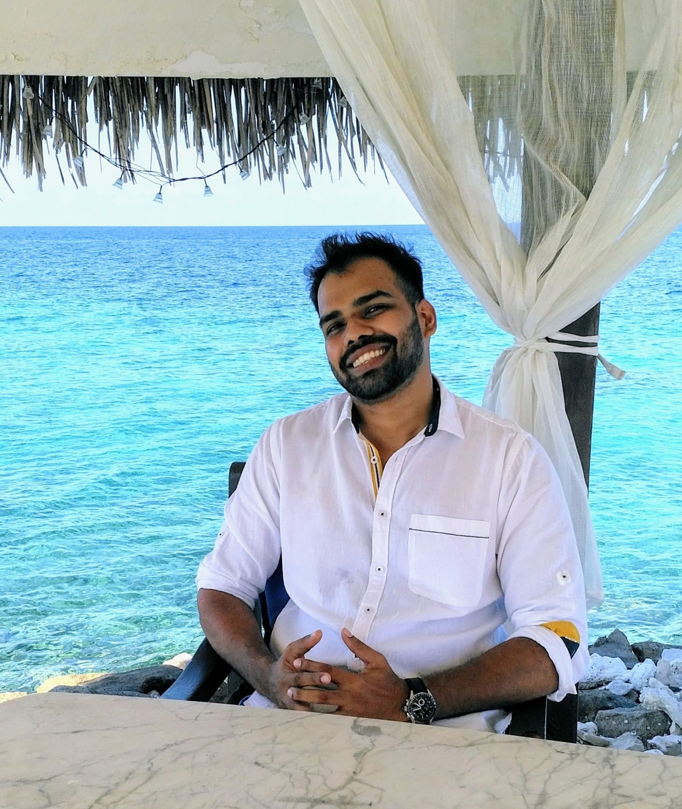
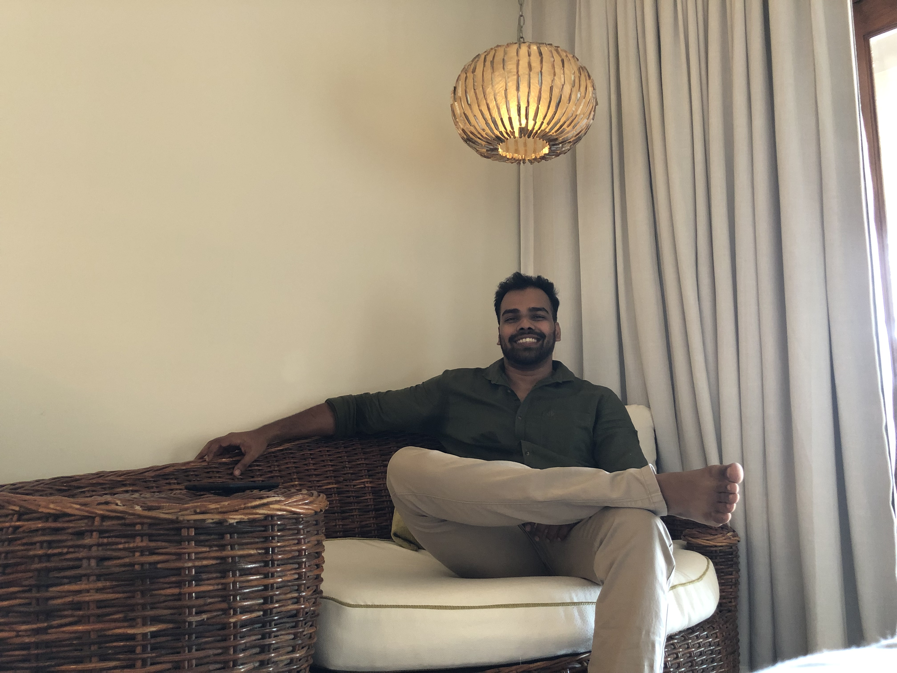
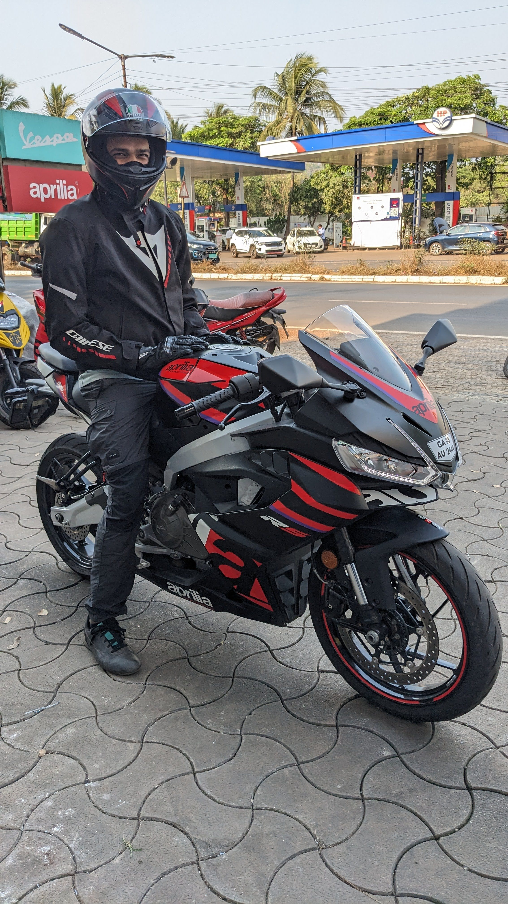
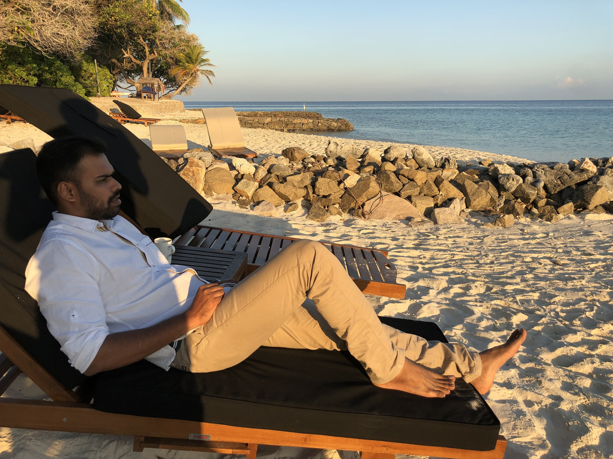
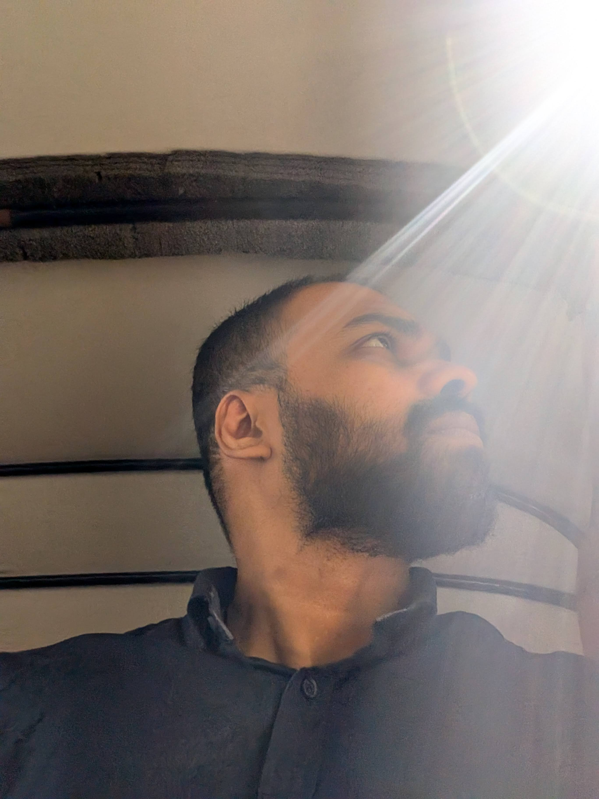
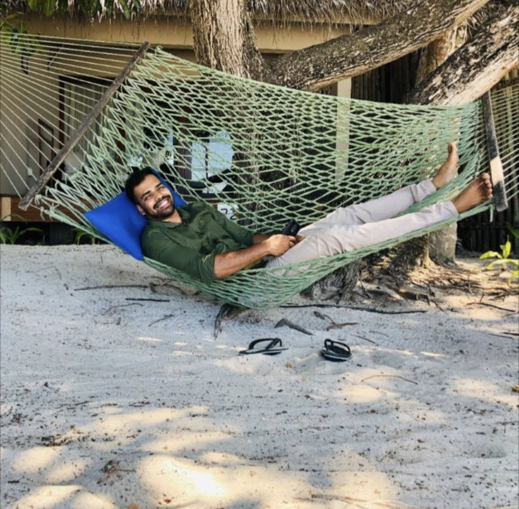

Matrimonial Profile · 2025
Network Engineer. Mindful living.
Looking for something real and lasting.
I am originally from Goa and currently working as a Network Engineer in Bangalore, with around six years of experience in the IT industry. My work keeps me intellectually engaged, but I try to maintain a healthy balance between professional life and personal well-being.
Over time I have come to appreciate a simple and mindful way of living. Happiness, for me, is often found in quiet moments — a sunset by the sea, a peaceful walk, a meaningful conversation, or a simple meal at home. I try to stay grounded through regular workouts, mindful eating, and meditation.
I am not very active on social media and generally prefer real connections over a constantly online lifestyle. In the long run, I hope to build a life that is peaceful, balanced, and closer to nature.
Things that genuinely bring balance and meaning to my life — not just things that look good on a profile.
Some moments that reflect who I am — at work, in nature, and at home.






I come from a close-knit Goan family and share a warm bond with my two sisters. Family has always been an important support system, and the values I grew up with — respect, honesty, and responsibility — continue to guide me.
I share a special bond with my nieces, and proudly hold the title of the cool uncle in the family.
Family, for me, is not only about where we come from, but also about the home and life we choose to build together.
I am looking for a partner with whom life can feel peaceful, meaningful, and supportive. Someone whose presence brings calmness rather than chaos, and with whom everyday life feels natural.
"More than external qualities, I value character, emotional maturity, and inner strength. I am looking for a partnership built on mutual respect, understanding, and companionship — where both people support each other's growth."
Naturally kind and considerate — someone who treats people with respect and empathy, not just when it is easy.
Self-aware, balanced, and able to communicate openly and honestly. Calm in difficulty, and thoughtful after it.
A thoughtful or spiritual side — whether through faith, meditation, or simply a deeper and quieter understanding of life.
Someone who appreciates a grounded life and does not feel the need to constantly chase external validation or stimulation.
A person who continues to learn, reflect, and grow — someone who values personal development and meaningful living.
I value conversations that are sincere and purposeful — especially when both people are genuinely exploring the possibility of building a future together.
If something here resonated, reach out. No formalities needed — a simple, honest note is enough.
✉ Write to me